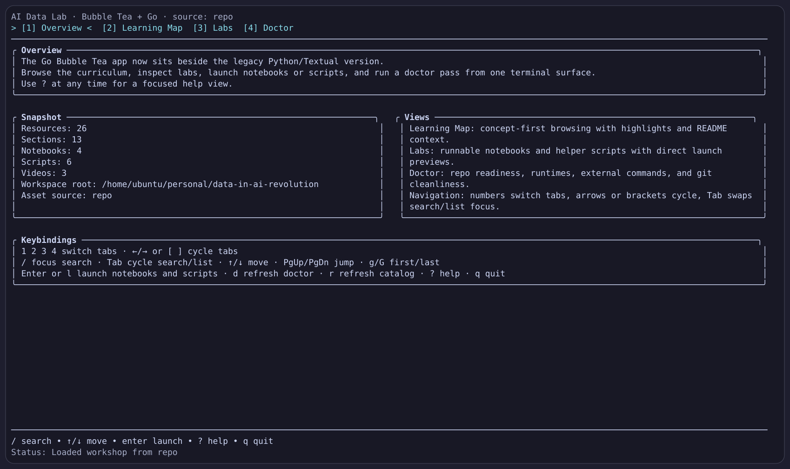
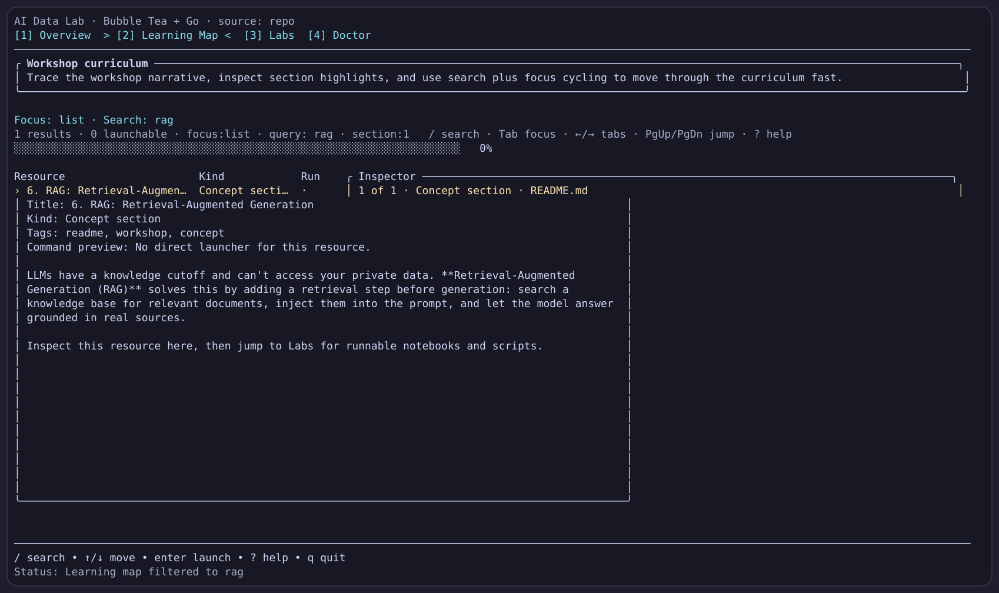
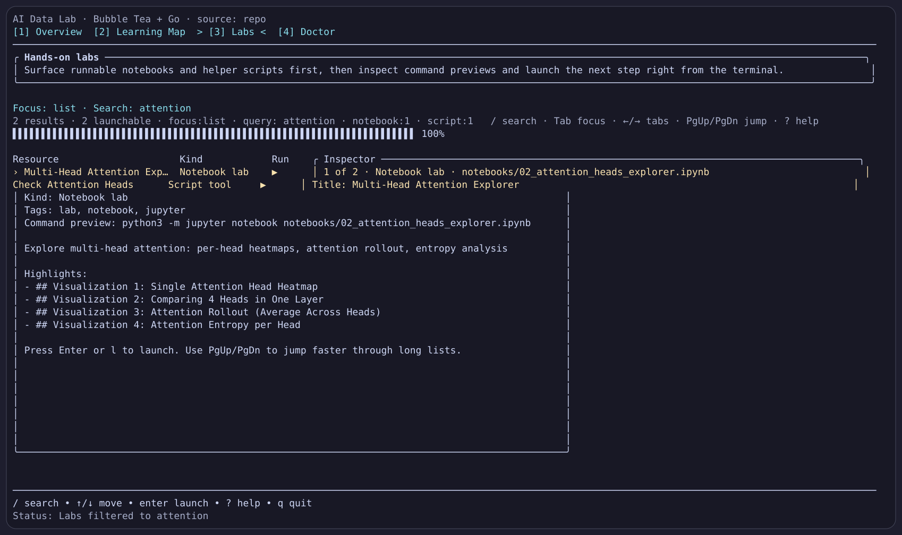
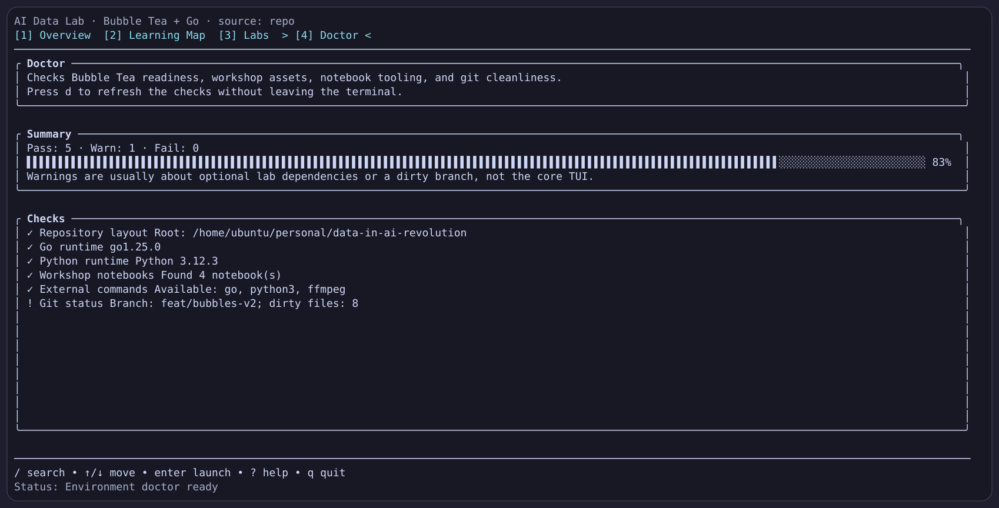

The new surface turns a giant workshop README, notebooks, scripts, and videos into one full-screen interface you can navigate, search, launch, and verify from the terminal.

Quick stats, commands, and keybindings are all visible on first launch.

README sections, highlights, paths, result counts, and focus state stay in one focused view.


Arrow keys, Page Up, Page Down, Space, mouse wheel, or nav dots all move through the deck. The TUI itself uses 1, 2, 3, 4, brackets or arrows for tab cycling, slash, Tab, PgUp/PgDn, g/G, question mark, d, r, l, and q.